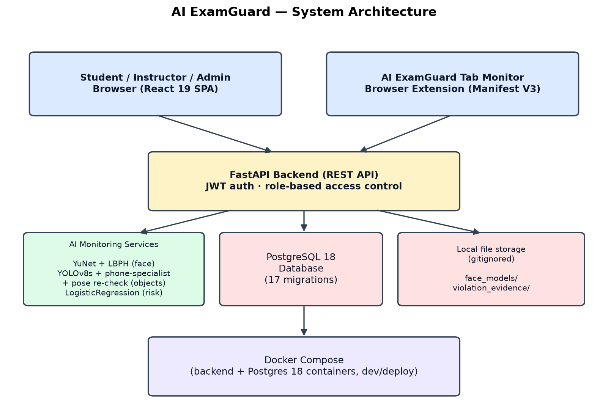
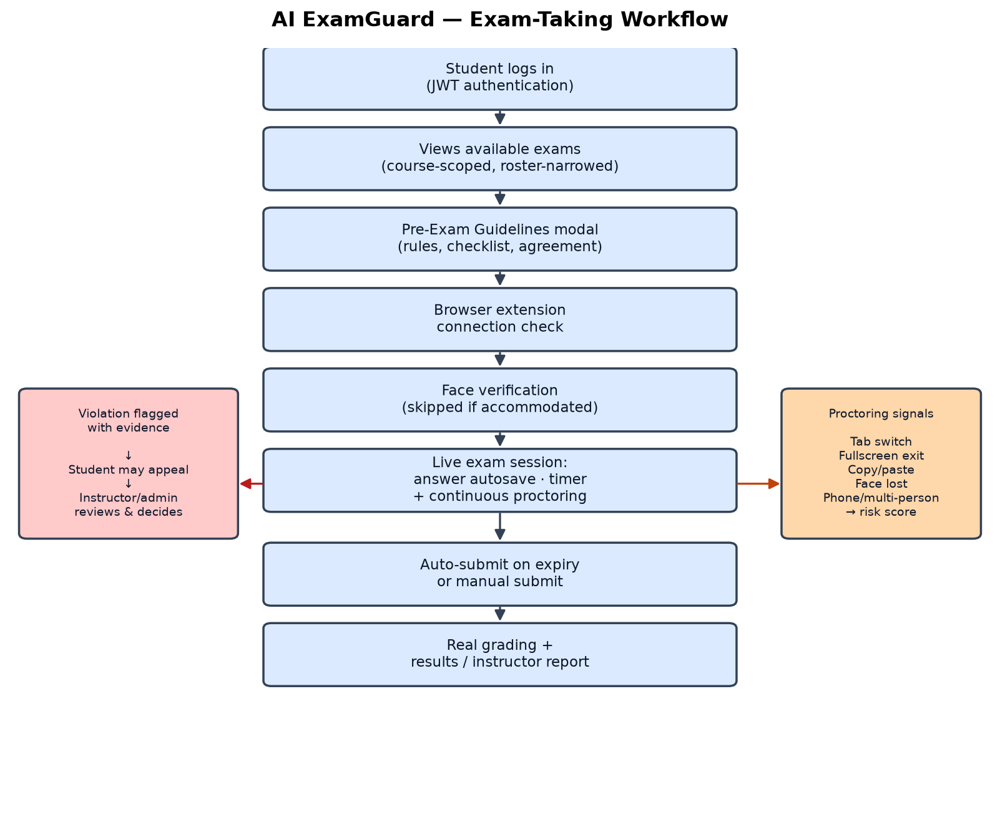

AI ExamGuard is a full-stack online examination platform with integrated AI-based proctoring, built for Arellano University. It allows instructors to create and manage examinations, students to take them remotely under automated monitoring, and administrators to oversee the system as a whole. Unlike many commercial proctoring products, which operate as opaque, vendor-controlled services, every detection mechanism in this system is implemented, trained, and evaluated in-house, using real measured data rather than vendor claims.
The system evolved through a deliberate, incremental methodology: rather than building the full originally-envisioned AI stack at once, each capability (behavioral proctoring, face verification, object detection, and finally a trained composite risk model) was added as its own validated, independently-tested slice. This documentation describes the system as actually implemented and verified, not as originally conceived in the design mockup, and is intended to support the systems requirements, architecture, and methodology chapters of the accompanying undergraduate thesis.
| ID | Requirement | Description |
|---|---|---|
| FR-1 | User Authentication | JWT-based login for three roles: Student, Instructor, Administrator. |
| FR-2 | Academic Records Management | Administrators manage Courses, Subjects, Students, and Instructors (full CRUD). |
| FR-3 | Exam Management | Instructors create, edit, and delete exams, questions, and choices scoped to their own exams; ownership is enforced at creation via the caller's linked instructor record, not a client-supplied value. |
| FR-4 | Bulk Question Import | CSV import for questions and choices, reducing manual entry for large exams. |
| FR-5 | Exam Rosters | Instructors may optionally narrow an exam's eligible students to a specific roster; exams with no roster remain course-wide by default. |
| FR-6 | Exam Taking | Students start/resume a session, answer autosaves per choice, a live countdown auto-submits on expiry, and grading is computed server-side. |
| FR-7 | Pre-Exam Guidelines | A gating modal presents proctoring rules and a checklist the student must acknowledge before the system verifies the browser extension and camera. |
| FR-8 | Behavioral Proctoring | Detects tab switching, fullscreen exit, copy/paste, and right-click during an active session. |
| FR-9 | Browser Extension Monitoring | A companion Manifest V3 extension detects navigation to AI-tool or search-engine domains in other tabs and relays it to the session. |
| FR-10 | Face Verification | Enrolls a student's face profile and periodically verifies webcam frames against it during an exam. |
| FR-11 | Object Detection | Periodically scans the webcam feed for a visible mobile phone or multiple people in frame. |
| FR-12 | Composite Risk Scoring | Combines behavioral and vision-based signals into a single 0-100 risk score, visible live to instructors. |
| FR-13 | Results and Reporting | Students review their own graded results; instructors view aggregate exam analytics (score distribution, pass rate, per-question accuracy). |
| FR-14 | Live Proctoring Dashboard | Instructors monitor all in-progress sessions for their own exams in real time. |
| FR-15 | Violation Evidence & Appeals | Vision-based violations capture the triggering webcam frame; students may contest a violation, and an instructor or admin resolves the appeal with a written decision. |
| FR-16 | Accessibility Accommodations | Administrators may exempt a student from face and/or object checks and grant extra exam time, with a mandatory documented reason. |
| FR-17 | Audit Logging | Staff access to another student's violations, evidence photos, or accommodation changes is recorded for accountability. |
| FR-18 | System Status Dashboard | Administrators view live, measured status (model versions, inference latency) of every AI subsystem. |
| Category | Requirement |
|---|---|
| Security | Passwords hashed (bcrypt); JWT-signed sessions; every session-scoped and violation-scoped endpoint enforces ownership (a student can only ever act on their own session; an instructor only on their own exams); no static file mount exposes stored face models or evidence images - both are served only through authenticated, access-checked routes. |
| Transparency | Every AI signal that feeds the risk score is inspectable: rule-based behavioral weights are fixed constants in code, and the trained model's learned coefficients are directly interpretable (logistic regression, not a black box). |
| Performance | Vision checks run on a fixed ~15-second polling cadence rather than per-frame, keeping bandwidth and server load bounded during concurrent exams. Measured steady-state latency (this development machine, CPU inference): face check ~20ms, object detection ~190ms, risk-model scoring ~1-2ms. |
| Portability | Backend and database are containerized with Docker Compose for reproducible deployment independent of host machine configuration. |
| Data Minimization | Raw enrollment photos are never persisted, only the trained per-student recognition model; evidence capture is limited to the four violation types where a webcam frame is genuinely relevant. |
| Auditability | Every migration to the database schema is version-controlled and reversible (Alembic); every dependency version is pinned. |
| Component | Technology |
|---|---|
| Backend framework | FastAPI 0.139 (Python), Uvicorn ASGI server |
| ORM / Migrations | SQLAlchemy 2.0, Alembic (17 applied migrations) |
| Database | PostgreSQL 18 |
| Authentication | python-jose (JWT), passlib + bcrypt (password hashing) |
| Frontend framework | React 19, Vite 8, Tailwind CSS 4, React Router 7 |
| Charts | Recharts 3 |
| Computer vision | OpenCV-contrib 5 (YuNet face detector, LBPH recognizer) |
| Object detection | Ultralytics YOLOv8 8.4, PyTorch 2.13 + Torchvision 0.28 (CPU or CUDA build) |
| Risk model | scikit-learn 1.9 (LogisticRegression), pandas, joblib |
| Browser extension | Manifest V3 (Chrome/Chromium-based browsers) |
| Containerization | Docker Compose (backend + Postgres 18 services) |
| Minimum client hardware | Webcam and microphone-capable device; Chrome/Chromium browser for extension support |
The system follows a three-tier architecture: a React single-page application (with a companion browser extension) as the client, a FastAPI REST backend enforcing authentication and business logic, and a PostgreSQL database. AI monitoring runs as backend services invoked synchronously during an exam session rather than as a separate microservice, keeping the deployment simple while each model remains independently swappable.

The backend is organized by responsibility, following a routes → services → models layering:
require_session_owner_student, require_violation_manage_access) so every route reuses the same verified access-control logic rather than re-implementing it.The schema comprises 14 core tables, evolved through 17 incremental, reversible migrations. Key entities:
| Entity | Purpose |
|---|---|
| User / Role | Account credentials and role assignment (Student, Instructor, Admin). |
| Student | Links a user to a course; also holds the enrolled face-model path and accessibility accommodation fields. |
| Instructor | Links a user to their owned exams. |
| Course / Subject | Academic grouping structure. |
| Exam / Question / Choice | Exam content, ownership-scoped to the creating instructor. |
| ExamRoster | Optional per-exam narrowing of eligible students. |
| ExamSession / StudentAnswer | A student's attempt at an exam and their per-question answers; scoring and timing are computed here. |
| Violation | A logged proctoring event; extended with evidence image path and appeal fields (reason, status, response, reviewer, timestamp). |
| AuditLog | Records staff access to another student's sensitive proctoring data. |
The primary end-to-end workflow is the student exam-taking session, shown below. Violations detected during the session (right branch) can be contested by the student and resolved by staff (left branch) after submission.

Face detection uses YuNet, a small pretrained ONNX detector chosen for robustness to head rotation and lighting compared to a classical Haar cascade. Face recognition uses OpenCV's LBPH (Local Binary Patterns Histograms) algorithm, trained per-student on their own enrolled images at enrollment time (minimum three valid samples) - no external face-recognition dataset or service is used. Raw enrollment photographs are discarded immediately after training; only the resulting per-student model file is retained.
Object detection runs two YOLOv8 passes per check: the unmodified pretrained yolov8s
weights (COCO classes) for person counting, and a separately fine-tuned single-class phone
specialist model. If the specialist misses on a whole-frame pass, a secondary pose-based check
locates wrist keypoints (YOLOv8-pose) and re-examines the cropped hand regions at a lower
confidence threshold, catching phones held at angles a whole-frame pass tends to miss.
The risk score (0-100) blends two kinds of signal deliberately, rather than training a single end-to-end model on everything:
LogisticRegression model, since real ground truth for these does exist (see 6.4).The two scores are summed and capped at 100. The vision model's raw output is recalibrated so a session with zero detected evidence scores exactly 0, rather than an arbitrary intercept-driven baseline.
A guiding principle throughout AI development on this project was to train only what has real ground truth behind it, and to leave everything else transparently rule-based rather than fabricate labels. Two real, distinct data sources were used:
The fine-tuned phone specialist trained on this combined data measured, on the OEP validation split specifically (held out by subject, not by frame, to avoid leaking a person's face/room across the split): precision 0.952, recall 0.828, mAP50 0.917 - compared to 0.328/0.113/0.334 for the original un-fine-tuned model on the same real footage. The risk model achieved AUC 0.879 on held-out validation windows.
instructor_id on exam
creation, and several session-scoped endpoints (violations, face-check, object-check, answers)
initially had no authentication at all. Both were identified via a deliberate security audit and
fixed before the corresponding features were considered complete..env, gitignored) and were rotated after being found to have been
accidentally committed earlier in development.Two features address concerns specific to AI-based proctoring's potential for disparate impact and unreviewable accusations:
An administrator can exempt a specific student from face and/or object detection checks, and/or grant extra exam time, with a required documented reason. This is enforced with defense in depth: not only does the client skip the relevant camera/check calls, but the corresponding backend services independently verify the accommodation flag and will never log a violation for an exempted student even if a client-side request is somehow still sent.
Vision-based violations (face lost, identity mismatch, phone detected, multiple people) capture the triggering webcam frame as evidence, since these are the only violation types with a webcam frame genuinely available at the moment of detection. A student may contest a violation with a written reason; an instructor or administrator with access to that session reviews the evidence and decision, recording a written resolution (upheld or overturned). This turns an automated flag into a reviewable decision rather than an unappealable accusation.
| Layer | Method |
|---|---|
| Backend logic | Direct HTTP calls against the running API covering every access-control boundary (owning vs. non-owning student/instructor, admin override, duplicate-action rejection). |
| Frontend | Static linting (oxlint) and production build on every change; live in-browser verification of each new feature via automated browser interaction, including full end-to-end flows (e.g. a student filing an appeal, an instructor reviewing and overturning it). |
| ML models | Held-out validation split by subject (not frame) to avoid leaking a person's identity across train/val; real precision/recall/mAP/AUC metrics reported rather than assumed. |
| Real hardware | Face detection, phone detection, and tab-focus monitoring were confirmed working end-to-end on the user's own webcam-equipped hardware, not only in the sandboxed development environment. |
| Security | A dedicated audit pass over every route confirmed each carries an authentication dependency and correctly scoped ownership check, with no static file mount exposing stored biometric data. |
The following gaps were identified through a structured self-review of the system against what would make it genuinely defensible for university-wide adoption, not just functionally complete:
These limitations are stated explicitly here, following the same principle applied throughout the project's AI development: an honestly disclosed limitation is preferable to an unstated one, and is itself part of what makes the system's evaluation credible.
AI ExamGuard demonstrates a complete, working online examination and AI-proctoring platform in which every automated decision - a face mismatch, a detected phone, a composite risk score - is backed by a real, measured, and disclosed methodology rather than an unverifiable vendor claim. Its accountability features (evidence-backed appeals, accessibility accommodations, and staff audit logging) directly address documented shortcomings of commercial proctoring tools, positioning the system not as a replica of existing products but as a transparent, defensible alternative - provided the limitations in Section 10 are treated as the project's next real milestones rather than left unaddressed.